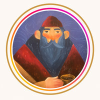

★★★★★
“Beautiful artistic cafe. Lovely view. Highly recommended.”
Google review
HANECAFEA warm meeting place in a historic mansion for coffee, desserts, events and culture.
Real photos from Hane Cafe's Instagram, embedded directly from the café's public profile.
Coffee, desserts, rooms, events and the view — the best way to see the latest moments at Hane is through the café's own feed.
Open @hanecafeordu →Historic architecture, warm interiors, art, desserts and a view across Ordu and the Black Sea.
Hane Cafe combines the character of Taşbaşı with a calm café atmosphere. Wood floors, deep blue accents, artwork and sea-facing spaces make it a memorable place to stay.
Come for coffee and dessert, a relaxed breakfast, an event, or simply the view.
History, coffee and a beautiful view in one place.
Hane Cafe · Taşbaşı, OrduInteriors, terrace views, desserts, coffee, events and the artistic character of the café.
Take your time: breakfast, homemade-style desserts, coffee, art and sea views all belong to the Hane experience.
Enjoy coffee with a selection of cakes, pastries and sweet treats.
Choose a terrace seat and take in the landscape around Ordu.
Hane also hosts cultural moments, exhibitions and special events.
From exhibitions and children's activities to intimate gatherings, Hane's historic rooms are part of the experience.
Sunday hours may change, so checking the latest Google Maps information before visiting is recommended.
Check Google Maps“Beautiful artistic cafe. Lovely view. Highly recommended.”
Google review“Great view, beautiful interior and very kind staff.”
Google review“A lovely atmosphere with a beautiful view and friendly service.”
Google reviewKesimevi Sokak No: 4
Taşbaşı, Altınordu / Ordu 52100
Türkiye